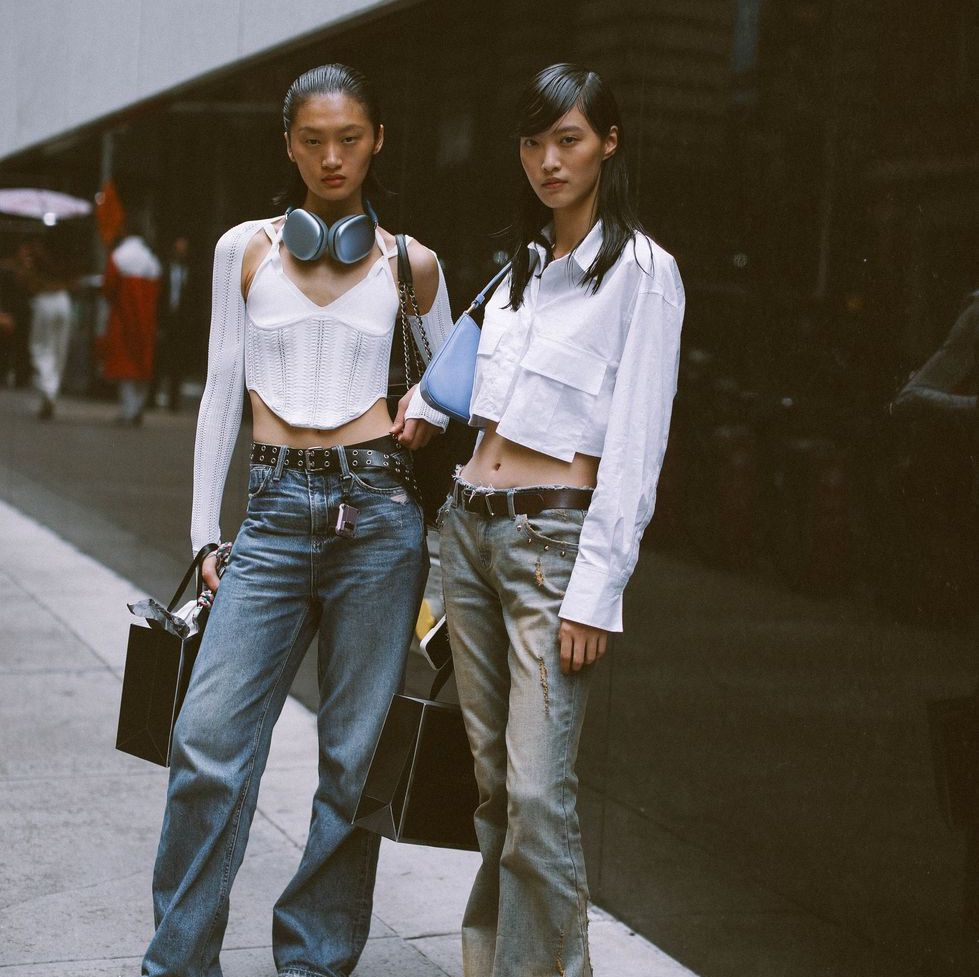
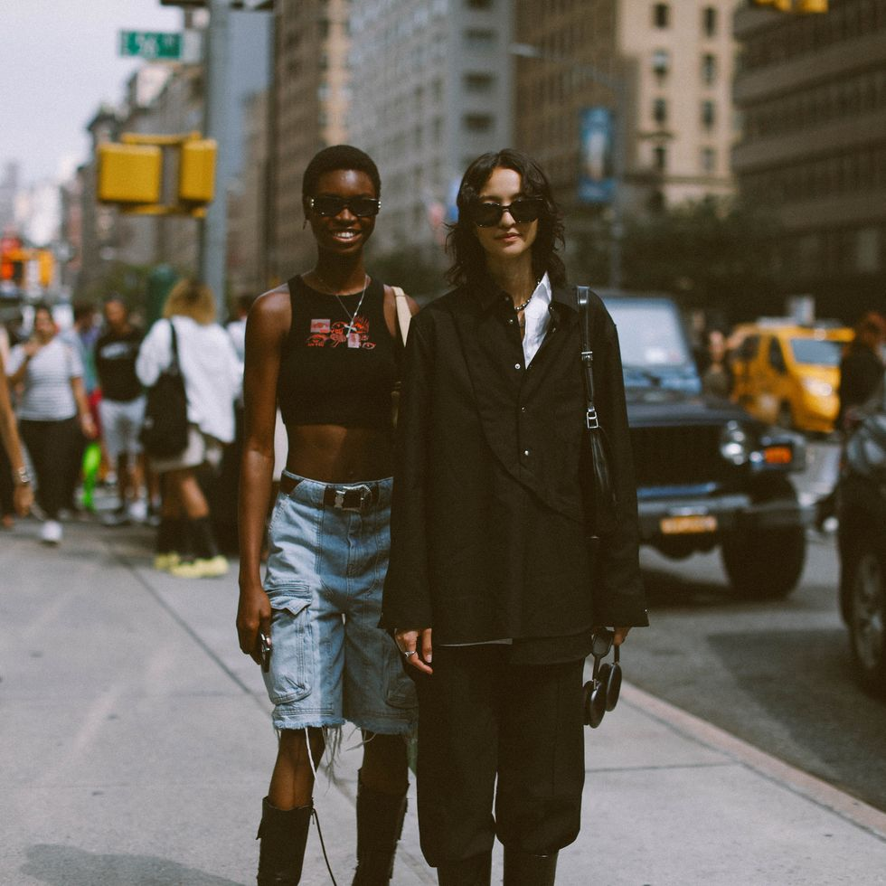
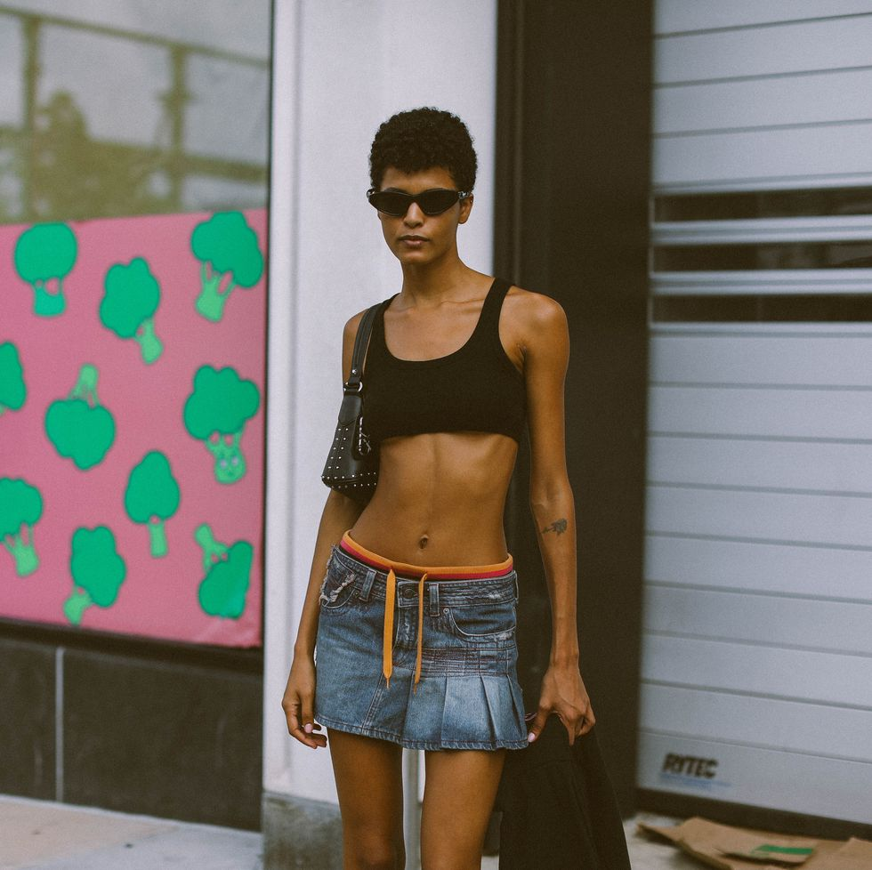

NEW YORK CITY
New York City stands as a global epicenter of the modeling industry, offering a multitude of opportunities and a fierce competition. The city boasts some of the world's top modeling agencies, including Wilhelmina Models, IMG Models, and Ford Models. Aspiring models should be prepared for the demanding and fast-paced nature of the market, which encompasses high fashion, commercial, and editorial modeling. A diverse portfolio showcasing versatility is crucial, and maintaining a professional image is non-negotiable. Networking with industry professionals, attending industry events, and staying committed to the craft are essential to thrive in the Big Apple. Furthermore, consider your location within the city, as proximity to the Fashion District can significantly affect your access to castings, auditions, and go-sees. Embracing diversity and understanding that success may require perseverance are key factors for making it in the New York modeling scene.


